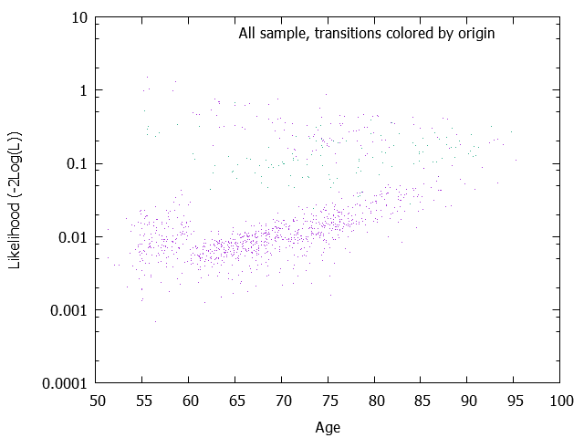
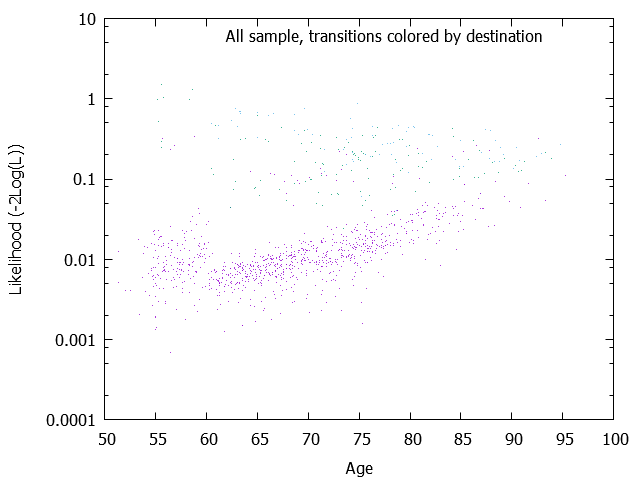
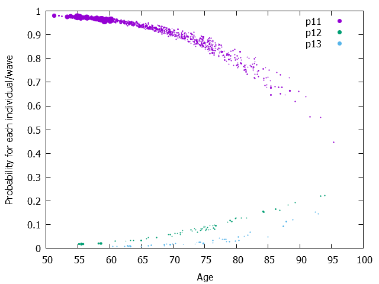
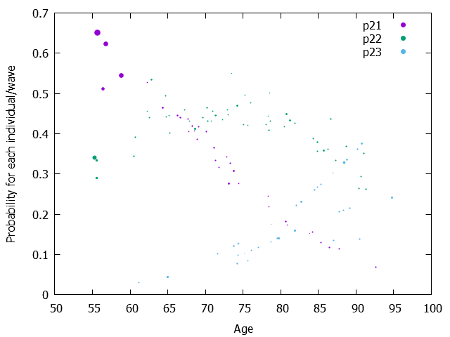

| Model= | 1 | + age |
|---|---|---|
| 12 | -9.0316329 | 0.0813408 |
| 13 | -10.7997152 | 0.0934278 |
| 21 | 2.3822622 | -0.0495846 |
| 23 | -7.5337873 | 0.0785767 |
The Wald test results are output only if the maximimzation of the Likelihood is performed (mle=1) Parameters, Wald tests and Wald-based confidence intervals W is simply the result of the division of the parameter by the square root of covariance of the parameter. And Wald-based confidence intervals plus and minus 1.96 * W It might be better to visualize the covariance matrix. See the page 'Matrix of variance-covariance of one-step probabilities and its graphs'.
| Model= | 1 | + age |
|---|---|---|
| 12 | -9.0316329 ( 1.1113360)W= -8.127[ -11.2098515; -6.8534143] | 0.0813408 ( 0.0151600)W= 5.365[ 0.0516272; 0.1110545] |
| 13 | -10.7997152 ( 1.6096595)W= -6.709[ -13.9546479; -7.6447825] | 0.0934278 ( 0.0217487)W= 4.296[ 0.0508003; 0.1360553] |
| 21 | 2.3822622 ( 1.3897790)W= 1.714[ -0.3417046; 5.1062291] | -0.0495846 ( 0.0199529)W= -2.485[ -0.0886923; -0.0104770] |
| 23 | -7.5337873 ( 1.9913071)W= -3.783[ -11.4367492; -3.6308254] | 0.0785767 ( 0.0243148)W= 3.232[ 0.0309197; 0.1262337] |